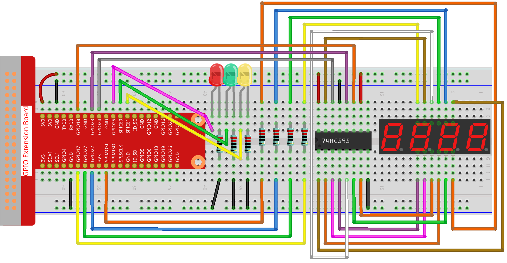

Bemerkung
Hallo und willkommen in der SunFounder Raspberry Pi & Arduino & ESP32 Enthusiasten-Gemeinschaft auf Facebook! Tauchen Sie tiefer ein in die Welt von Raspberry Pi, Arduino und ESP32 mit anderen Enthusiasten.
Warum beitreten?
Expertenunterstützung: Lösen Sie Nachverkaufsprobleme und technische Herausforderungen mit Hilfe unserer Gemeinschaft und unseres Teams.
Lernen & Teilen: Tauschen Sie Tipps und Anleitungen aus, um Ihre Fähigkeiten zu verbessern.
Exklusive Vorschauen: Erhalten Sie frühzeitigen Zugang zu neuen Produktankündigungen und exklusiven Einblicken.
Spezialrabatte: Genießen Sie exklusive Rabatte auf unsere neuesten Produkte.
Festliche Aktionen und Gewinnspiele: Nehmen Sie an Gewinnspielen und Feiertagsaktionen teil.
👉 Sind Sie bereit, mit uns zu erkunden und zu erschaffen? Klicken Sie auf [hier] und treten Sie heute bei!
3.1.7 Verkehrsampel
Einführung
In diesem Projekt werden wir LED-Lichter in drei Farben verwenden, um die Änderung der Verkehrsampel zu realisieren, und eine vierstellige 7-Segment-Anzeige wird verwendet, um die Zeitdauer jedes Verkehrszustands anzuzeigen.
Benötigte Komponenten
Für dieses Projekt benötigen wir die folgenden Komponenten.

Schaltplan
T-Board-Name |
physisch |
wiringPi |
BCM |
GPIO17 |
Pin 11 |
0 |
17 |
GPIO27 |
Pin 13 |
2 |
27 |
GPIO22 |
Pin 15 |
3 |
22 |
SPIMOSI |
Pin 19 |
12 |
10 |
GPIO18 |
Pin 12 |
1 |
18 |
GPIO23 |
Pin 16 |
4 |
23 |
GPIO24 |
Pin 18 |
5 |
24 |
GPIO25 |
Pin 22 |
6 |
25 |
SPICE0 |
Pin 24 |
10 |
8 |
SPICE1 |
Pin 26 |
11 |
7 |
Versuchsdurchführung
Schritt 1: Bauen Sie die Schaltung auf.
Schritt 2: Wechseln Sie das Verzeichnis.
cd ~/davinci-kit-for-raspberry-pi/python-pi5
Schritt 3: Ausführen.
sudo python3 3.1.7_TrafficLight_zero.py
Während der Code läuft, simulieren LEDs die Farbänderung von Verkehrsampeln. Zuerst leuchtet die rote LED für 60 Sekunden, dann leuchtet die grüne LED für 30 Sekunden; anschließend leuchtet die gelbe LED für 5 Sekunden. Danach leuchtet die rote LED wieder 60 Sekunden lang. Auf diese Weise wird diese Serie von Aktionen wiederholt ausgeführt. Gleichzeitig zeigt die 4-stellige 7-Segment-Anzeige kontinuierlich die Countdown-Zeit an.
Code
Bemerkung
Sie können den unten stehenden Code Ändern/Zurücksetzen/Kopieren/Ausführen/Stoppen. Bevor Sie das tun, müssen Sie zum Quellcodepfad wie raphael-kit/python-pi5 gehen. Nachdem Sie den Code geändert haben, können Sie ihn direkt ausführen, um die Wirkung zu sehen.
#!/usr/bin/env python3
from gpiozero import OutputDevice, LED
import threading
# GPIO-Pins für 74HC595-Schieberegister einrichten
SDI = OutputDevice(24) # Serielle Dateneingabe
RCLK = OutputDevice(23) # Register Clock
SRCLK = OutputDevice(18) # Shift Register Clock
# GPIO-Pins für die Auswahl der Ziffern auf der 7-Segment-Anzeige einrichten
placePin = [OutputDevice(pin) for pin in (10, 22, 27, 17)]
# Segmentcodes für die Zahlen 0-9 auf der 7-Segment-Anzeige
number = (0xc0, 0xf9, 0xa4, 0xb0, 0x99, 0x92, 0x82, 0xf8, 0x80, 0x90)
# GPIO-Pins für die LEDs der Verkehrsampel einrichten
ledPinR = LED(25) # Rote LED
ledPinG = LED(8) # Grüne LED
ledPinY = LED(7) # Gelbe LED
# Dauer-Einstellungen für die Verkehrsampel
greenLight = 30
yellowLight = 5
redLight = 60
# Namen der Verkehrsampelfarben
lightColor = ("Rot", "Grün", "Gelb")
# Initialisierung der Statusvariablen
colorState = 0
counter = 60
timer1 = None
def setup():
""" Initialisieren Sie das Verkehrsampelsystem und starten Sie den Timer. """
global timer1
timer1 = threading.Timer(1.0, timer)
timer1.start()
def clearDisplay():
""" Löschen Sie die 7-Segment-Anzeige. """
for _ in range(8):
SDI.on()
SRCLK.on()
SRCLK.off()
RCLK.on()
RCLK.off()
def hc595_shift(data):
""" Verschieben Sie Daten in das 74HC595-Schieberegister zur Anzeige der Ziffer. """
for i in range(8):
SDI.value = 0x80 & (data << i)
SRCLK.on()
SRCLK.off()
RCLK.on()
RCLK.off()
def pickDigit(digit):
""" Wählen Sie eine bestimmte Ziffer zur Anzeige auf der 7-Segment-Anzeige aus. """
for pin in placePin:
pin.off()
placePin[digit].on()
def timer():
""" Behandeln Sie die Zeitgestaltung für die Änderung der Verkehrsampel. """
global counter, colorState, timer1
timer1 = threading.Timer(1.0, timer)
timer1.start()
counter -= 1
if counter == 0:
counter = [greenLight, yellowLight, redLight][colorState]
colorState = (colorState + 1) % 3
print(f"Zähler : {counter} Farbe: {lightColor[colorState]}")
def lightup():
""" Aktualisieren Sie die LED der Verkehrsampel basierend auf dem aktuellen Zustand. """
global colorState
ledPinR.off()
ledPinG.off()
ledPinY.off()
[ledPinR, ledPinG, ledPinY][colorState].on()
def display():
""" Zeigen Sie den aktuellen Zählerwert auf der 7-Segment-Anzeige an. """
global counter
for i in range(4):
digit = counter // (10 ** (3 - i)) % 10
if i == 0 and digit == 0:
continue
clearDisplay()
pickDigit(3 - i)
hc595_shift(number[digit])
def loop():
""" Hauptloop zur kontinuierlichen Aktualisierung der Anzeige und der LEDs der Verkehrsampel. """
while True:
display()
lightup()
def destroy():
""" Räumen Sie die Ressourcen auf, wenn das Skript beendet wird, wie das Ausschalten der LEDs und das Stoppen des Timer-Threads. """
global timer1
timer1.cancel()
ledPinR.off()
ledPinG.off()
ledPinY.off()
try:
setup()
loop()
except KeyboardInterrupt:
destroy()
Code Explanation
Importiert die Klassen
OutputDeviceundLEDaus der gpiozero-Bibliothek, um die Steuerung von allgemeinen Ausgabegeräten und insbesondere LEDs zu ermöglichen. Importiert das Python-Modul threading, das für das Erstellen und Verwalten von Threads zur gleichzeitigen Ausführung verwendet wird.#!/usr/bin/env python3 from gpiozero import OutputDevice, LED import threading
Initialisiert die GPIO-Pins, die mit dem Schieberegister für die serielle Dateneingabe (SDI), die Registeruhr (RCLK) und die Schieberegisteruhr (SRCLK) verbunden sind.
# Einrichtung der GPIO-Pins für das 74HC595 Schieberegister SDI = OutputDevice(24) # Serielle Dateneingabe RCLK = OutputDevice(23) # Registeruhr SRCLK = OutputDevice(18) # Schieberegisteruhr
Initialisiert die Pins für jede Ziffer der 7-Segment-Anzeige und definiert die binären Codes für die Anzeige der Zahlen 0-9.
# Einrichtung der GPIO-Pins für die Auswahl der Ziffern auf der 7-Segment-Anzeige placePin = [OutputDevice(pin) for pin in (10, 22, 27, 17)] # Segmentcodes für die Zahlen 0-9 auf der 7-Segment-Anzeige number = (0xc0, 0xf9, 0xa4, 0xb0, 0x99, 0x92, 0x82, 0xf8, 0x80, 0x90)
Initialisiert GPIO-Pins für die roten, grünen und gelben LEDs, die in der Verkehrsampelsimulation verwendet werden. Setzt die Dauer (in Sekunden) für jeden Farbzustand in der Verkehrsampel fest. Definiert die Namen der Verkehrsampelfarben zur Referenz.
# Einrichtung der GPIO-Pins für die LEDs der Verkehrsampel ledPinR = LED(25) # Rote LED ledPinG = LED(8) # Grüne LED ledPinY = LED(7) # Gelbe LED # Dauereinstellungen für die Verkehrsampel greenLight = 30 yellowLight = 5 redLight = 60 # Namen der Verkehrsampelfarben lightColor = ("Rot", "Grün", "Gelb")
Initialisiert Variablen zur Verfolgung des aktuellen Farbzustands, eines Zählers für die Zeitmessung und einen Platzhalter für ein Timer-Objekt.
# Initialisierung der Statusvariablen colorState = 0 counter = 60 timer1 = None
Initialisiert das Verkehrsampelsystem und startet den Timer-Thread.
def setup(): """ Initialisieren Sie das Verkehrsampelsystem und starten Sie den Timer. """ global timer1 timer1 = threading.Timer(1.0, timer) timer1.start()
Funktionen zur Steuerung der 7-Segment-Anzeige.
clearDisplayschaltet alle Segmente aus,hc595_shiftverschiebt Daten in das Schieberegister undpickDigitaktiviert eine bestimmte Ziffer auf der Anzeige.def clearDisplay(): """ Löschen Sie die 7-Segment-Anzeige. """ for _ in range(8): SDI.on() SRCLK.on() SRCLK.off() RCLK.on() RCLK.off() def hc595_shift(data): """ Verschieben Sie Daten in das 74HC595 Schieberegister zur Anzeige der Ziffer. """ for i in range(8): SDI.value = 0x80 & (data << i) SRCLK.on() SRCLK.off() RCLK.on() RCLK.off() def pickDigit(digit): """ Wählen Sie eine bestimmte Ziffer zur Anzeige auf der 7-Segment-Anzeige aus. """ for pin in placePin: pin.off() placePin[digit].on()
Verwaltet die Zeitsteuerung für die Änderungen der Verkehrsampel und aktualisiert den Zähler und den Farbzustand.
def timer(): """ Behandeln Sie die Zeitsteuerung für die Änderungen der Verkehrsampel. """ global counter, colorState, timer1 timer1 = threading.Timer(1.0, timer) timer1.start() counter -= 1 if counter == 0: counter = [greenLight, yellowLight, redLight][colorState] colorState = (colorState + 1) % 3 print(f"counter : {counter} color: {lightColor[colorState]}")
Aktualisiert den Zustand der Verkehrsampel-LEDs basierend auf dem aktuellen Farbzustand.
def lightup(): """ Aktualisieren Sie die LED der Verkehrsampel basierend auf dem aktuellen Zustand. """ global colorState ledPinR.off() ledPinG.off() ledPinY.off() [ledPinR, ledPinG, ledPinY][colorState].on()
Berechnet die Ziffer, die auf jedem Segment der 7-Segment-Anzeige angezeigt werden soll, und aktualisiert sie entsprechend.
def display(): """ Zeigen Sie den aktuellen Zählerwert auf der 7-Segment-Anzeige an. """ global counter for i in range(4): digit = counter // (10 ** (3 - i)) % 10 if i == 0 and digit == 0: continue clearDisplay() pickDigit(3 - i) hc595_shift(number[digit])
Die Hauptschleife, die die Anzeige und die LEDs der Verkehrsampel kontinuierlich aktualisiert.
def loop(): """ Hauptloop zur kontinuierlichen Aktualisierung der Anzeige und der LEDs der Verkehrsampel. """ while True: display() lightup()
Räumt Ressourcen auf, wenn das Skript beendet wird, wie das Ausschalten der LEDs und das Stoppen des Timer-Threads.
def destroy(): """ Räumen Sie die Ressourcen auf, wenn das Skript beendet wird, wie das Ausschalten der LEDs und das Stoppen des Timer-Threads. """ global timer1 timer1.cancel() ledPinR.off() ledPinG.off() ledPinY.off()